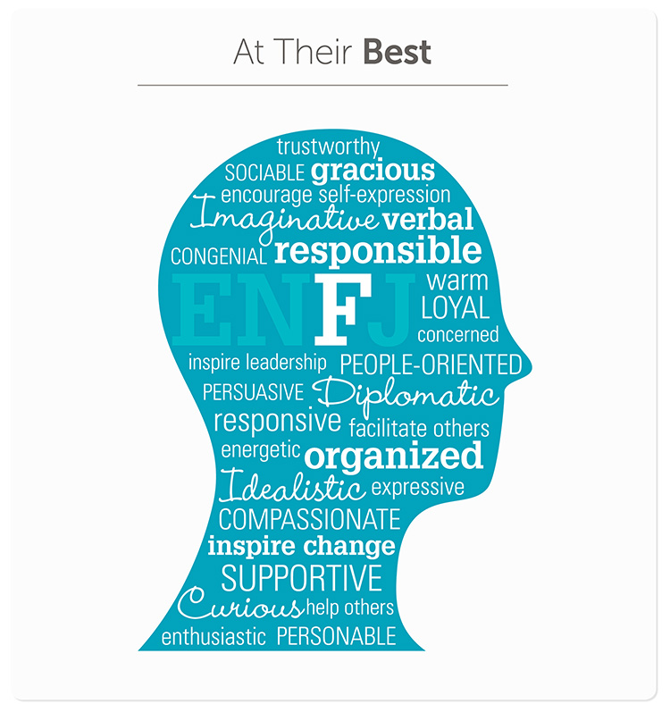
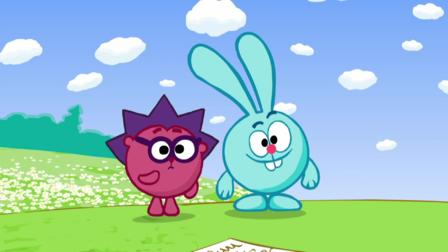

Viktor Larsson


Vem är jag?
Jag är en positiv 17 åring som värderar min livsstil som Jehovas vittne högt, andra saker jag verkligen älskar är mina underbara vänner även fast de är få, min gitarr som jag använt i över 5år och teknologi med mera.
Mina tre favoritspek är
- Minecraft
- Sims 4
- Overcooked
Mina tre favorithemsidor är
- wol.jw.org
- jw.org
- unsplash
I webbutveckling 1 vill jag lära mig
- Html grunder
- Html advancerat
- CSS grunder
Jag siktar på slutbetyg
Jag siktar på att få B/A eftersom jag vill arbeta hårt på lektionerna och har ett intresse för kodning och programmering